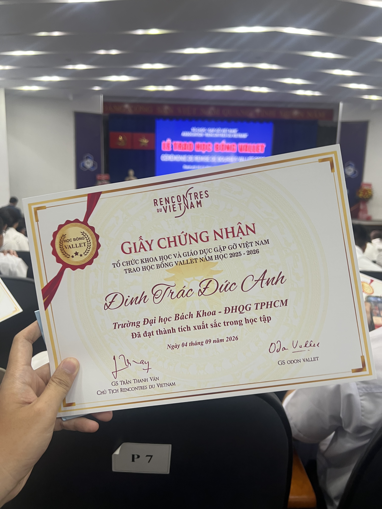
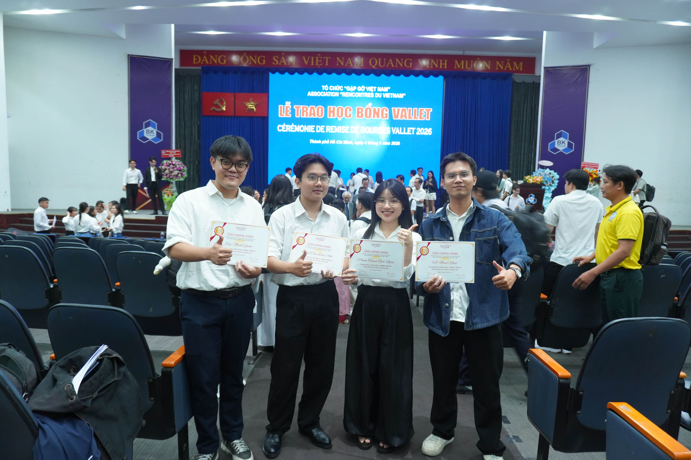

Some mornings you know you will remember before they have even finished happening. September 4th, 2026, at Hall A5 of Ho Chi Minh City University of Technology, was one of those mornings. Among hundreds of students and graduate students from universities across the southern region, my name was called to receive the 2026 Vallet Scholarship, and even now, writing this down, I can still feel the nervousness of that morning as if it were happening again.
For many people, this might sound like just one more scholarship among many. For me, it carries a different kind of weight. The Vallet Scholarship has walked alongside generations of Vietnamese students for more than twenty five years now, reaching students in big cities and in the most remote provinces alike, asking for nothing but genuine effort in return. Getting to stand among that long line of recipients, even once, already feels like more than my fair share of luck.

The scholarship was founded in 2001, under the Rencontres du Vietnam organization, and has been personally funded by Professor Odon Vallet, a French professor at Paris Sorbonne University. For more than two decades, he has committed a large part of his inherited fortune to funding scholarships for Vietnamese students, from high school through graduate school, adding up to tens of thousands of scholarships across the country.
What moves me most about his story is not the numbers, but the reason behind them. Professor Vallet's family history was once tied, in part, to the war in Vietnam, yet instead of letting that past become a distance, he chose to turn it into a quiet, lasting bond that needed no attention drawn to it. He has said that even after he is gone, the people who have walked this road with him will carry it forward. To me, that is one of the most beautiful pictures of friendship between two countries: one built on giving without expecting anything back.
And that journey could never have reached this far without the person who has kept it alive for more than twenty years: Professor Tran Thanh Van. A Vietnamese scientist based in France, he founded the Rencontres du Vietnam organization and has personally overseen the selection and awarding of Vallet Scholarships since the very first year. I still remember the way he spoke with students at the ceremony that morning, carrying the seriousness of a senior scientist and the warmth of a grandfather encouraging his grandchildren to keep studying hard. It is that quiet, unwavering dedication, more than two decades of it, that makes this scholarship feel so meaningful.
I want to use this space to say a heartfelt thank you to Professor Odon Vallet and Professor Tran Thanh Van. Thank you for the trust, for staying committed to a journey whose results are not always visible right away, and for making students like me feel that someone, far away, is still watching and hoping we keep learning and keep researching. For someone trying to build a path in research, that kind of encouragement means far more than the monetary value of the scholarship itself.

Because no achievement really belongs to one person alone. This certificate, to me, is also the result of late evenings spent with my research group, arguing over a half formed idea, rewriting a single sentence in a paper until it finally reads right. The Vallet Scholarship arrived not long after one of our papers was accepted to EMNLP 2026, and I choose to see that not as coincidence, but as a quiet reminder that I am on the right path, with a lot of people quietly pushing from behind.
I know the best way to repay a gift like this is not through words of thanks, but through staying serious about the path of learning and research I have chosen. So I want this post to stand as a small promise to myself: to keep working harder, so that someday, looking back, the Vallet Scholarship will not just be a line on a list of achievements, but a real starting point.
Once again, my deepest thanks go to Professor Odon Vallet, Professor Tran Thanh Van, and the entire Rencontres du Vietnam organization for this meaningful gift. Thank you to Ho Chi Minh City University of Technology, the faculty of Computer Science and Engineering, and the ViLaR Research Group for their constant support. And thank you to my family, who were there long before there was any title worth mentioning.